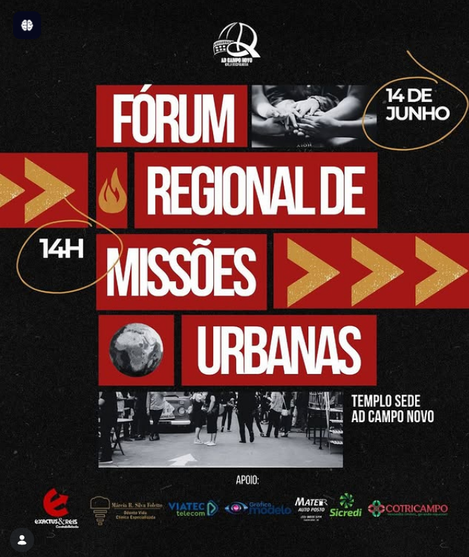
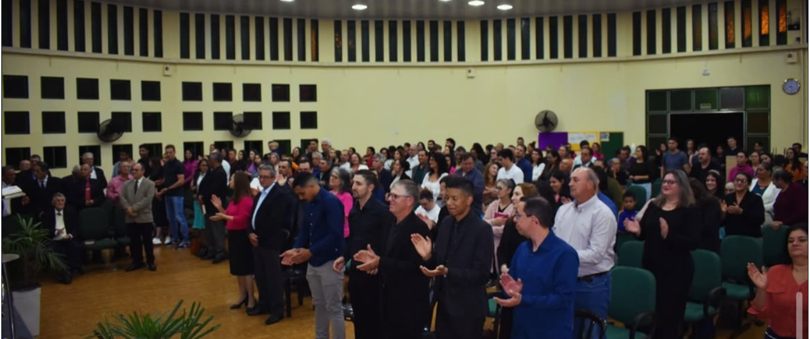
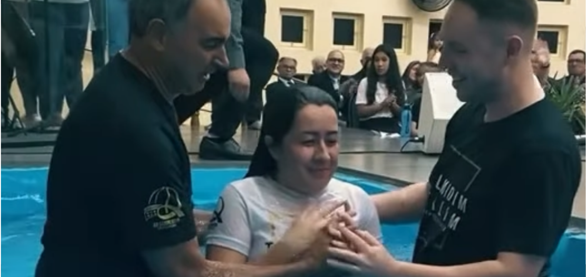
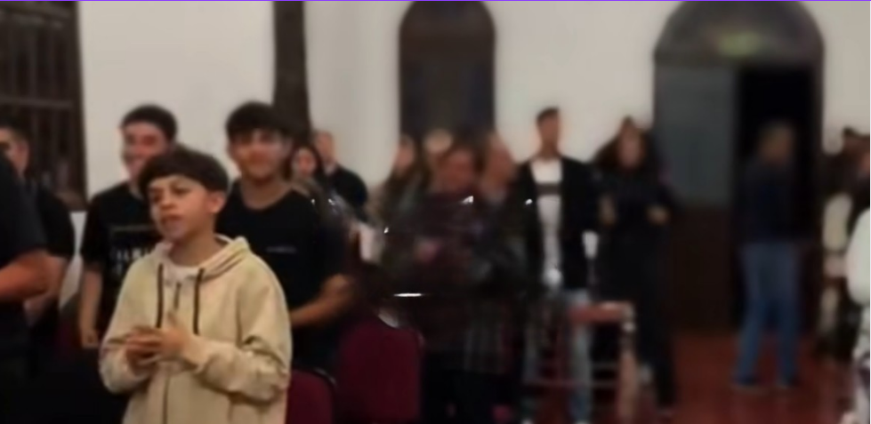
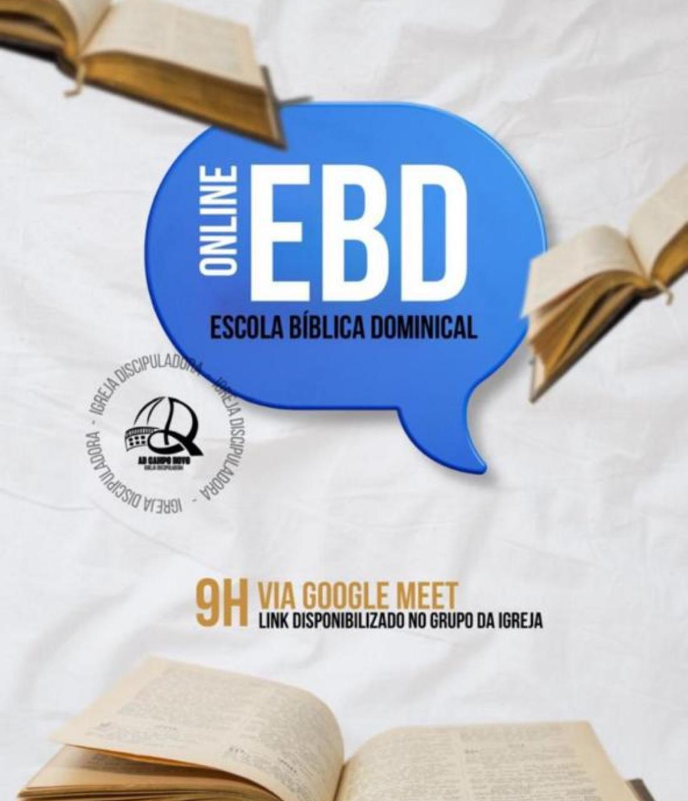
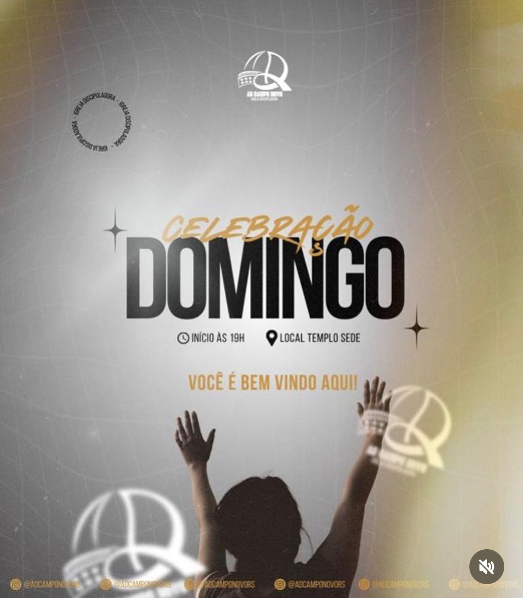
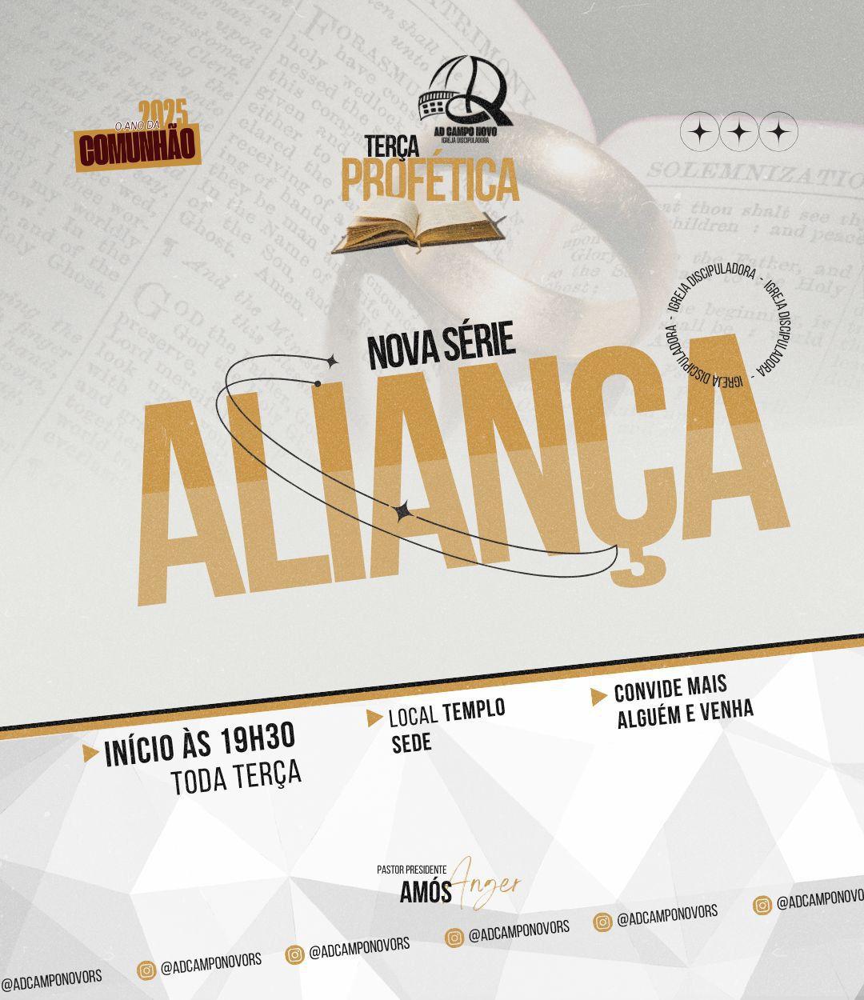
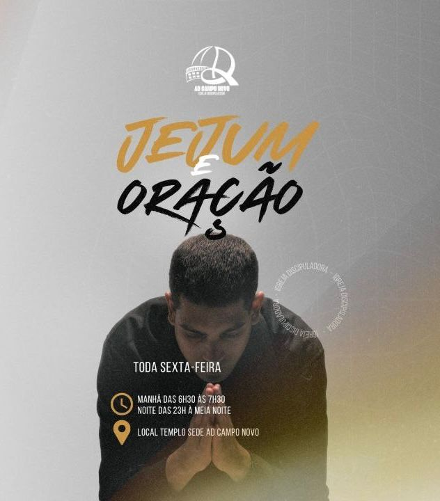
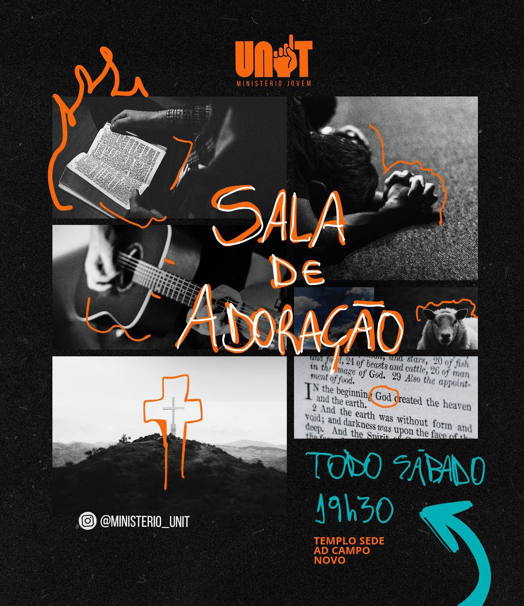

O Fórum de Missões Urbanas é um chamado para a igreja viver o IDE de forma prática, alcançando vidas e impactando cidades.
Serão momentos de ensino, ativação e direção para avançarmos na missão que o Senhor nos confiou.
Pr. Amós Anger
Recebemos mais um ano como oportunidade de servir a Deus com dedicação e compromisso. Reconhecemos que a vida é um dom e valorizamos o privilégio de poder contribuir para o desenvolvimento da comunidade. Para 2026, almejamos êxito em nossos projetos, cientes de que, ao alinhar nossos objetivos aos princípios bíblicos, teremos grandes possibilidades de alcançar resultados significativos. Entendemos que servir é uma das formas mais autênticas de expressar gratidão pelo perdão de nossos pecados, e incentivamos todos a perseverarem na prática do bem, mesmo diante de adversidades e injustiças. Que nossas ações, orientadas por valores cristãos e proteção constante do nosso amado Pai, inspirem outras pessoas a viverem cheias do Espírito Santo. Aos membros da AD CAMPO NOVO, desejamos um 2026 abençoado e próspero, confiantes de que todo trabalho desenvolvido será continuamente aperfeiçoado. Filipenses 1:6. Acreditamos no potencial desta igreja para realizar importantes conquistas e expandir sua atuação no campo eclesiástico. Estamos certos de que cada membro conta com recursos gerados pelo Espírito Santo para avançar nos desafios e impactar positivamente seus círculos de relacionamento, promovendo conhecimento, fé e crescimento espiritual. Em nome do compromisso assumido, reafirmamos a CONSOLIDAÇÃO de nossa visão, e esperamos que os resultados reflitam no fortalecimento, na multiplicação e na saúde espiritual de nossos oikos. Pr. Amós Anger e Keila Anger.
Conheça os pilares que direcionam a AD Campo Novo em sua caminhada de fé, serviço e discipulado.



Igreja comprometida com discipulado e a pregação do Evangelho.
Fique por dentro de tudo o que Deus está fazendo em nosso campo. Aqui você encontra avisos, eventos, testemunhos e notícias das igrejas.
📍 Av. Bento Gonçalves, 782 – Centro

Domingo 9h
Domingo 19h
Terça 19h30
Sexta 6h30
Sábado 19h30📍 Av. Campos Sáles, 150 – Bairro Evangélico
Nossos cursos são voltados para o crescimento espiritual, familiar e ministerial, formando discípulos firmes no Reino de Deus.